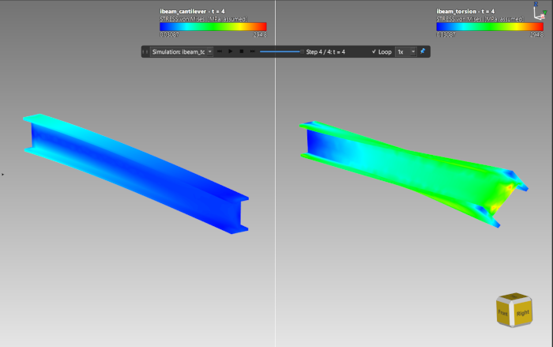
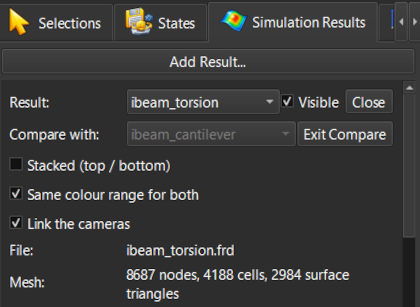
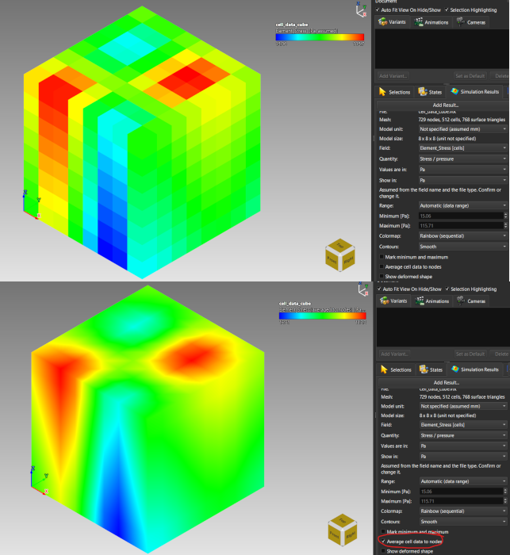
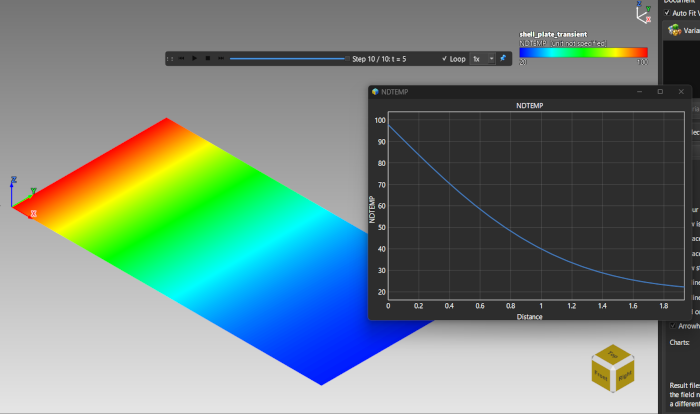
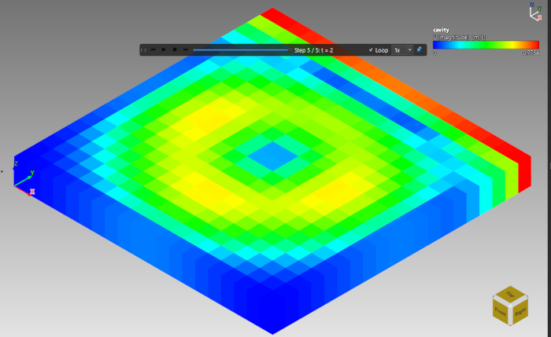

Lesson 22: Comparing Results, Cell and Shell Data
Introduction
Real result files differ in more than their numbers. Two analyses of the same part need to be compared fairly; element-wise data is drawn flat unless you average it; shell models have no volume to cut; and flow results arrive with units of their own. This lesson shows how ModelViewer handles each case.
Comparing Two Results
Compare shows two results of the same document side by side or stacked, with one shared camera. The example here puts bending against torsion on the same I-beam.
ibeam_cantilever.frd, then use Visualization → Simulation Results → Add Result to This Document... to add ibeam_torsion.frd.
Bending (left) and torsion (right) of the same I-beam, side by side with one colour range
The compare controls in the Simulation Results tabElement Data (Cell Data)
Some solvers write one value per element instead of per node. These fields carry [cells] in the Field list and every element is drawn in a single flat colour. Average cell data to nodes draws them smooth: each node takes the average of the surrounding elements, weighted by their size.
cell_data_cube.vtk, an 8 x 8 x 8 block of hexahedra with only cell fields: a smooth Element_Stress and an integer Element_Group with four regions.
Element_Stress drawn flat (left) and averaged to the nodes (right)Shell (Surface-Only) Results
A result made only of triangles or quads has no volume to cut. Charts still work: Plot Over Time reads the point of the surface you clicked, and Plot Over Line follows the line along the surface, leaving a gap where the line leaves it on a curved shell.
shell_plate_transient.frd: a flat 2 x 1 plate of shell quads with the temperature field over 10 time steps and heat flowing in from the left edge.
Temperature along the shell plate with the chart beside itA Flow Result With Its Own Units
Open openfoam_cavity/cavity.foam (the .foam file is empty; it only points at the case). All its fields are cell data, so they are drawn flat, and the units come from the case's own dimensions: temperature in kelvin, velocity in metres per second, the symmetric tensor sigma in pascal; the kinematic pressure p has no unit. Play the five time directories (0 to 2 s) to see a vortex spin up and a temperature gradient warm.

The OpenFOAM cavity sample, velocity magnitude with its unit in the legend